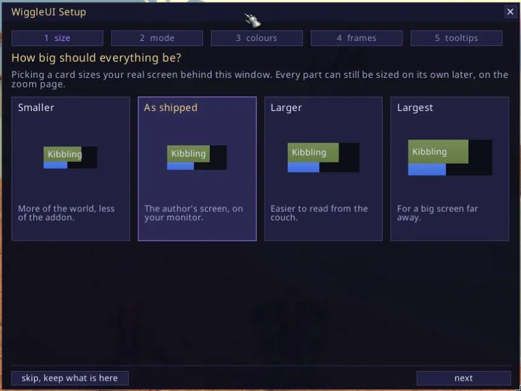
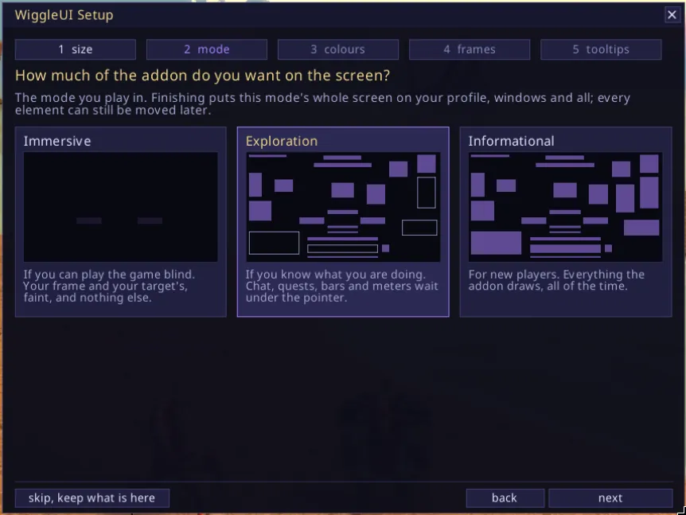
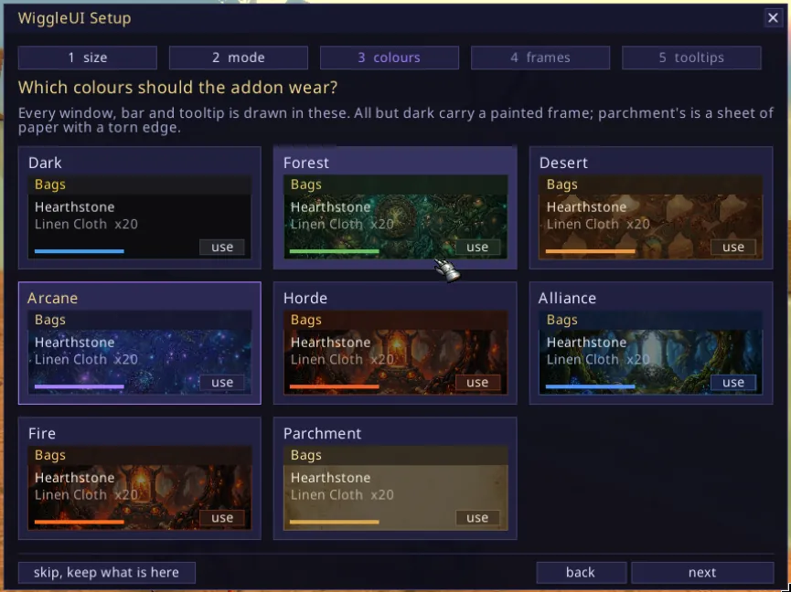
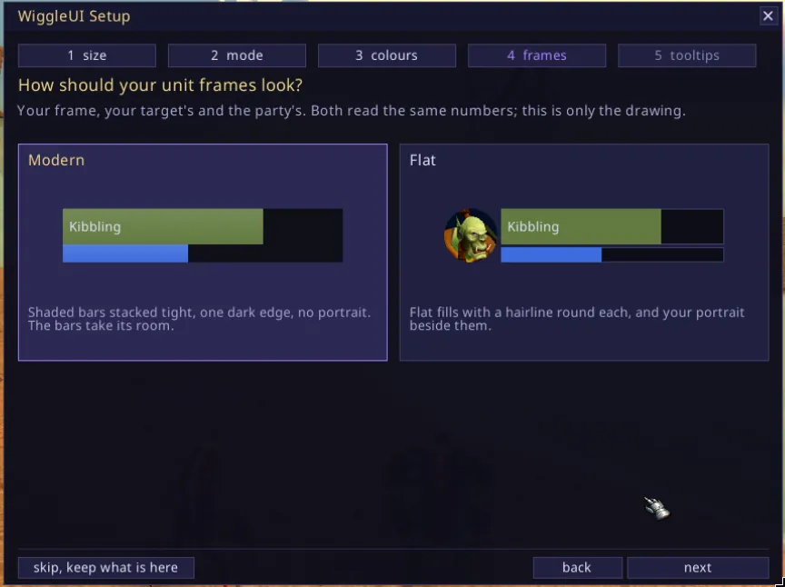
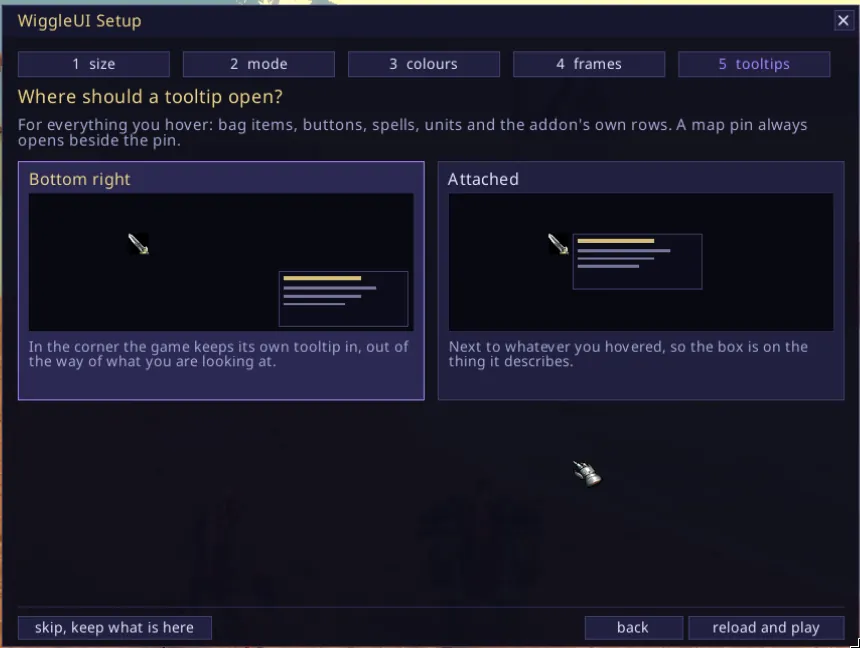
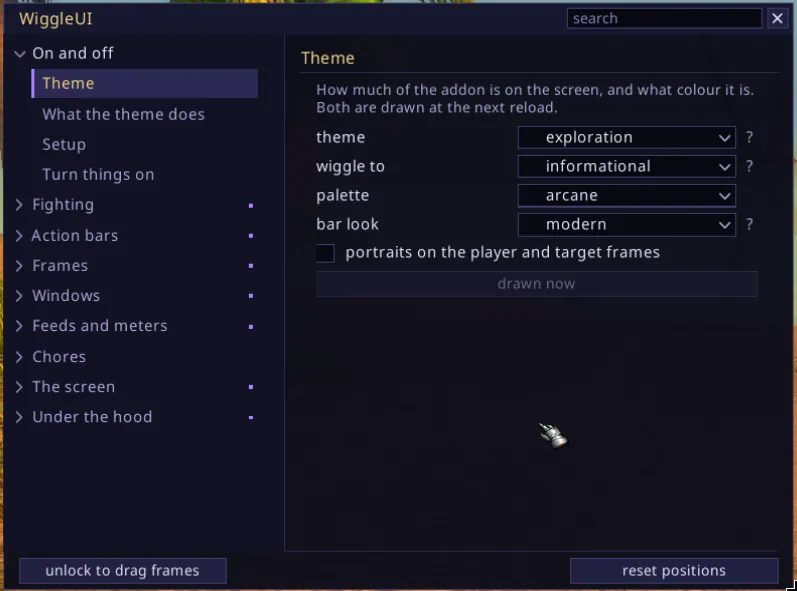

The first login
The first time you log in, five cards come up, one question each, with a picture of the answer on every card.
How big should everything be. Picking a card sizes the real screen behind the window while you look at it. Four stops, from smaller to largest, and every part can still be sized on its own later.

The size page: Smaller, As shipped, Larger, Largest, each drawn at its own scale How much of the addon do you want on the screen. This is the theme: immersive, exploration or informational. They run from the one that shows least to the one that shows most, which is also from the player who knows the game best to the one who is new to it.

The mode page: immersive nearly empty, exploration and informational filling up Which colours should the addon wear. Dark, forest, desert, arcane, horde, alliance, fire or parchment. All but dark carry a painted frame round every window; parchment's is a sheet of paper with a torn, scorched edge.

The colours page: the same bag window drawn in all eight palettes How should your unit frames look. Modern is shaded bars stacked tight with one dark edge and no portrait, the bars taking the portrait's room. Flat is flat fills with a hairline round each and your portrait beside them.

The frames page: modern with the bars taking the portrait's room, flat with the portrait beside them Where should a tooltip open. In the corner the game keeps its own tooltip in, or attached to whatever you hovered. A map pin is attached either way, because a box in the screen's corner is a long way from the pin it names.

The tooltips page: the box in the screen's corner, or on the thing it describes
{kind=link}
{kind=link}
{kind=link}
{kind=link}
{kind=link}
Nothing is written until you finish the last page. Skipping, closing the window or pressing Escape keeps what you have, which on a fresh install is the shipped screen, and the setup never comes up on its own again.
Finishing reloads the interface if the mode, the colours or the frames moved, because those three are drawn once at load. It also lays the chosen mode's shipped screen over this character's profile, windows and sizes included, so picking immersive gives you the author's immersive screen rather than the informational one with things hidden.
To answer them again, type /wui setup, or press Escape and take WiggleUI Setup from the game menu. It starts on your current answers rather than on the shipped ones.
Getting around
/wui opens the settings window and /wui again closes it.
Down the left is a rail of nine groups, and a tenth named after your class if your class has pages nobody else does. A group is a thing you can point at on the screen or a job you came to do: On and off, Fighting, Action bars, Frames, Windows, Feeds and meters, Chores, The screen, Under the hood. The group you are in stands open with its sections listed under it and the rest stay one line each.
{kind=link}

The window opens on On and off, which is one switch per part of the addon and a sentence saying what turning it on puts on your screen. Nothing else is on that page: no numbers, no ranges. Turn things on, go and look at your screen, come back. The same switch sits at the top of that part's own page with its numbers under it.
There is a search field above the page. Type into it and it lists every control in the window that matches, wherever it lives, and taking one takes you to its page with the control marked. It takes the keyboard when you click it and at no other time.
Two commands are worth knowing before the rest:
/wui help every word the addon answers, one line each
/wui status what every part is doing right now/wui is also /wiggleui and /wiggle, if the short one is taken.